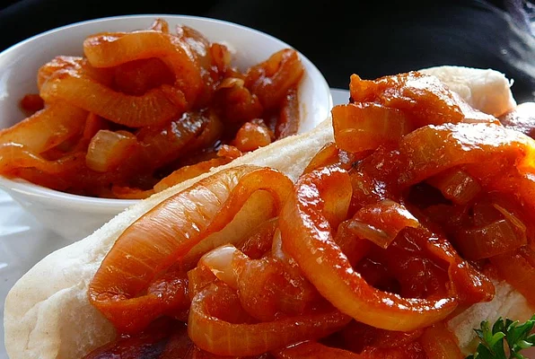

Hot Dog Onions

Description
I love the push cart hot dogs, mainly because of the onions they serve on top...so I mixed and matched many different ingredients until I came up with the perfect combination for this recipe! This tastes just like the kind of onions I often would get from my favorite hot dog stands!
Ingredients
- 2 tablespoons corn oil
- 1 extra large onion, thinly sliced
- 1 1/2 teaspoons hot pepper sauce
- 1 teaspoon yellow mustard
- 1 teaspoon white sugar
- 1 teaspoon chili powder
- 1 teaspoon salt
- 1/4 teaspoon ground black pepper
- 1/4 teaspoon ground cayenne pepper
- 1/2 cup water
- 2 tablespoons tomato paste
Steps:
- Heat the corn oil in a skillet over medium heat. Stir in the onion; cook and stir until the onion has softened and turned translucent, about 5 minutes
- Stir in the hot sauce, yellow mustard, sugar, chili powder, salt, black pepper, and cayenne pepper. Reduce heat to medium-low, and continue to cook for about 5 minutes.
- Stir in the water and tomato paste; simmer until liquid has reduced, about 20 minutes.